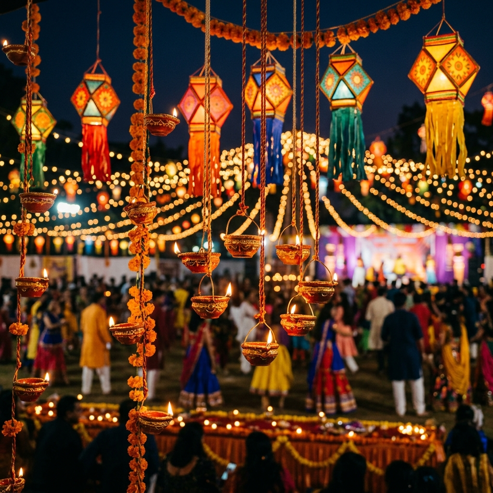

Step into Ahmedabad's most authentic cultural Garba sanctuary. Where centuries-old Gujarati traditions, the soul-stirring rhythms of live folk mandali, and the divine spirit of Maa Amba come together in an unforgettable celebration of community, energy, and devotion.
Mandavadi was envisioned not merely as another commercial festival ground, but as a consecrated cultural sanctuary in Ahmedabad. It exists to honor the timeless spiritual essence of Sharad Navratri, bringing devotees back to the sacred roots of Gujarati devotion, classical folk music, and community fellowship.
What truly distinguishes the Mandavadi Navratri experience is our uncompromising dedication to authenticity. Here, recorded synthesizers make way for genuine acoustic mandalis, master folk vocalists, live dhol rhythms, and earthen lamps. Every swirl in the circular Garbo echoes centuries of devotion to Maa Amba, creating an electric atmosphere where heritage dances and hearts unite.
100% Live Acoustic Rhythms
Sacred Devotion & Aarti
Spacious Concentric Circles
Family-Centric Culture
The Evolution of an Experience
Our Story: Preserving Ahmedabad's Navratri Soul
From a heartfelt aspiration to revive intimate Sheri Garba devotion to crafting one of the most respected Navratri celebrations in Ahmedabad.
Beginning[FOUNDING YEAR]
A Sacred Spark in Ahmedabad
Founded under the visionary leadership of [FOUNDER NAME], Mandavadi began with a singular mission: to safeguard the devotional purity of Gujarati Garba amid rapidly modernizing festival formats.
Vision
Rooted in Authentic Folk Heritage
The founders established the core Mandavadi philosophy: zero synthetic tracks, strict adherence to traditional Chhand, Doha, and Raas, and an open ground where families could celebrate safely through the night.
Growth[IMPORTANT MILESTONE]
Expanding the Circle of Devotion
As word spread across Ahmedabad, Mandavadi evolved into a recognized cultural landmark at Nidhivan Party Plot, introducing grand clay art installations, royal entrance torans, and engineered acoustic soundscapes.
Experience[EVENT HIGHLIGHT]
A Benchmark for Ahmedabad Garba
Welcoming renowned folk vocalists and master dholis, each night became a vibrant tapestry of synchrony, pristine Aarti rituals, and joyous celebration uniting Garba enthusiasts from across Gujarat.
Future
Passing the Torch of Gujarati Culture
Mandavadi remains committed to inspiring future generations with Gujarat's timeless folk heritage, continuously elevating modern event production while preserving the sacred purity of Mani Aradhana.
The 8 Cultural Pillars
The Complete Mandavadi Experience
Every night at Mandavadi is crafted as a holistic cultural journey, celebrating the finest dimensions of Navratri in Ahmedabad.
Traditional Garba
Sacred circular Raas, ancient steps, Dodhiya, and soulful synchrony dancing in devotion around the illuminated Garbo.
Live Acoustic Music
Resonant beats of authentic Dhol, soulful Sharnay, harmonium, and traditional rhythm mandali without synthetic tracks.
Master Folk Artists
Celebrated Gujarati folk singers and musicians delivering unmatched vocal mastery and sacred devotional hymns.
Gujarati Heritage
Handcrafted clay decor, earthen diyas, royal torans, authentic mirror-work attire, and reverent daily Maha Aarti rituals.
Vibrant Crowd Energy
Electric unity where thousands of passionate dancers move together in effortless rhythm until the early morning hours.
Heritage Atmosphere
Expansive open-air manicured grounds at Nidhivan Party Plot with ambient warm lighting and traditional festival architecture.
A welcoming, safe space uniting families, youngsters, and elders to forge cherished Navratri memories year after year.
Distinctive Cultural Quality
Why Mandavadi?
Why devotees, traditional dancers, and families cherish Mandavadi as their destination for Garba in Ahmedabad.
01
Authentic Gujarati Culture
While many events transition toward commercial pop concerts, Mandavadi preserves the sanctity of Gujarati folklore, traditional prayers, and timeless Raas-Garba melodies.
Pure devotional atmosphere
Traditional Chaniya Choli & Kediyu
02
High-Energy Live Garba
Feel the raw vibration of live Dhol players, Sharnay, and chorus vocalists orchestrating the energy of thousands moving in unified step from twilight to dawn.
Non-stop live folk performances
Dynamic tempo transitions
03
Exceptional Artists
Curated lineups featuring the finest folk vocalists and instrumentalists across Gujarat who understand the intricate rhythm and emotion of classical Navratri songs.
Renowned folk mandali
Revered spiritual hymns
04
Immersive Production
Thoughtfully engineered acoustic sound distribution that envelops every dancer without harsh distortion, paired with heritage-inspired clay lighting installations.
Balanced acoustic ground sound
Warm festive illumination
05
Community & Safety
Designed with families in mind, Mandavadi enforces dedicated security personnel, CCTV coverage, family circles, and first-aid amenities for absolute peace of mind.
Safe, family-friendly atmosphere
Managed crowd capacities
06
Memorable Ahmedabad Experience
Every detail — from the welcoming torans to the final prasad — is structured to give you an unforgettable taste of authentic Ahmedabad Navratri celebration.
Authentic Gujarati hospitality
Unmatched spiritual joy
Cultural Heart of Gujarat
Celebrating Navratri in Ahmedabad
There is no festival on earth quite like Navratri in Ahmedabad. For nine consecutive nights (and ten glorious days during Sharad Navratri), Gujarat's largest heritage metropolis transforms into the world’s longest and most vibrant dance festival. Streets glow under strings of festive lights, the rhythmic resonance of the Dhol echoes across every neighborhood, and people of all generations dress in traditional mirror-embroidered Chaniya Choli and Kediyu.
In Gujarat, Garba is far more than a dance; it is a sacred offering of gratitude to Maa Shakti. The word Garba originates from the Sanskrit word Garbha, meaning womb. Traditionally, a perforated earthen pot with an ignited diya inside — the Garbo — is placed at the center of the dancing circle, symbolizing the universe and the divine source of all life. Dancers move in graceful concentric circles, spinning and clapping in unison to signify the eternal cycle of time.
“In Ahmedabad, Navratri is not just observed — it is lived in every heartbeat, every step of the Raas, and every melody sung to the Divine Mother.”
— Mandavadi Cultural Trust
From the historic Pols of Old Ahmedabad where intimate Sheri Garbas have flourished for centuries to modern open-air party plots like Nidhivan, the city’s passion for Navratri is peerless. Mandavadi proudly bridges these two worlds: honoring the sacred reverence of traditional Sheri Garba while offering the spacious comfort, safety, and acoustic excellence of a world-class cultural venue.
9+10
Nights of Non-Stop Raas-Garba
100%
Live Folk Music & Acoustic Rhythm
Nidhivan Party Plot
Ahmedabad, Gujarat • Festive Cultural Ground
Our Guiding Principles
Values That Shape Mandavadi
Every decision we make — from our musical curation to venue hospitality — is grounded in six enduring cultural values.
Culture
We preserve centuries-old Gujarati folklore, sacred hymns, traditional attire, and classical dance forms without compromise.
Community
Navratri thrives on togetherness. We nurture an inclusive, safe, and family-centered environment where everyone feels welcomed.
Energy
Channeling pure devotional passion into vibrant, synchronized dance steps that keep the celebration alive from dusk until dawn.
Music
Championing authentic acoustic instrumentation, master folk vocalists, and live mandali performances that honor musical heritage.
Authenticity
Staying loyal to traditional Gujarati Raas-Garba customs and sacred rituals without relying on artificial festival gimmicks.
Innovation
Blending timeless heritage aesthetics with world-class acoustic engineering, safety protocols, and seamless ticketing technology.
Captured Moments
A Visual Tapestry of Ahmedabad Navratri
Witness the passion, colors, devotion, and electric energy that define every night of Navratri Garba in Ahmedabad at Mandavadi.
Traditional Garba Dancers in Sync
Royal Heritage Entrance Gate
Concentric Garba Circles at Night
Live Gujarati Folk Mandali on Stage

Joyful Devotional Celebration
The Heartbeat of Garba
The Sound of Mandavadi
Music is the spiritual pulse of Mandavadi. We bring together revered Gujarati folk vocalists, master dholis, and traditional instrumentalists who pour their soul into every verse. Without pre-recorded tracks or electronic shortcuts, our live mandali creates a dynamic acoustic dialogue with the dancers on the ground, building in tempo from soulful slow sweeps into exhilarating Raas climaxes.
Explore our curated gallery of photographs, aerial drone captures, and live video reels showcasing real Mandavadi moments from previous seasons in Ahmedabad.
Clear, verified information regarding passes, venue arrangements, traditional attire, and celebration details at Mandavadi in Ahmedabad.
Mandavadi is an Ahmedabad-based Navratri and Garba cultural experience dedicated to authentic Gujarati traditions, live acoustic mandali, sacred Aarti ceremonies, and community celebration under the guiding motto “Suryast thi Suryoday Sudhi Maa ni Aradhana”.
Mandavadi is hosted at Nidhivan Party Plot in Ahmedabad, Gujarat. The venue features manicured open lawns, expansive parking zones, royal entrance decor, and clean facilities.
Mandavadi prioritizes authentic live folk music over synthetic DJ tracks, engineered acoustic ground sound, spacious concentric dancing circles, devotional sanctity, and a safe, respectful environment for families.
Ahmedabad is the cultural epicentre of Gujarat's nine-night dance festival. The entire city dances together across both intimate heritage Pols and large open-air grounds with unmatched passion, devotion, and festive joy.
Visitors can expect 10 nights of traditional Raas-Garba, live folk singers and dholis, divine daily Aarti, safe family-friendly circles, curated pure-vegetarian food stalls, and a warm festive atmosphere.
Yes, Mandavadi proudly presents renowned Gujarati folk vocalists, master percussionists, sharnay players, and traditional rhythm mandalis performing live without recorded shortcuts.
Traditional Gujarati attire (Chaniya Choli for women, Kediyu / Kurta for men) is mandatory for participants entering the active Garba dance circles to honor the cultural sanctity of the festival.
You can pre-book Season Passes online through our official ticketing partners (BookMyShow, Paytm Insider/District, AllEvents) or directly via our website booking portal. Single-day passes are available at on-ground counters.
Book Mandavadi Season Pass
Register your interest for the premier Navratri & Garba experience in Ahmedabad.